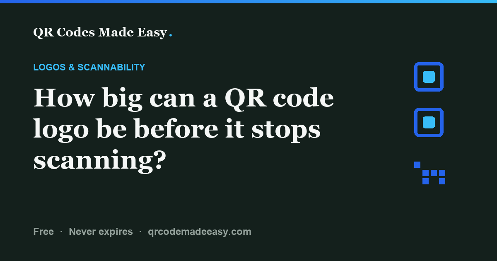

How big can a QR code logo be before it stops scanning?

There is no universal safe logo percentage. Keep the logo and its background pad small, use level H as a starting point, and test the final export and a printed proof.
A centered logo is not automatically safe. Some QR versions have an alignment pattern in the center. For the least interference, put your logo beside the code, outside its clear margin.
Why 30% is not a logo allowance
DENSO WAVE describes error correction in terms of restoration of total codewords, not a percentage of the image that can safely be covered. A codeword is a unit of encoded data. You cannot turn the level H recovery figure into a promise that a logo may hide 30% of the squares.
The finder squares, timing lines and alignment patterns help a reader locate and interpret the symbol. Keep them unobstructed rather than relying on error correction to compensate. The placement of covered modules and the distribution of affected codewords matter; there is no fixed area threshold that works for every payload, QR version and reader.
The DENSO WAVE FAQ warns that overlaying an illustration can make reading impossible or slow. Higher error correction does not certify a branded design. It can also increase the symbol's data density or required size.
Width and area are different
For a square logo on a square symbol, a width of 40% means an area of 16%. That is geometry, not a scanning limit. Count the entire obscured region, including any background pad, and measure against the symbol itself rather than its surrounding margin.
A width under a third is sometimes used as a starting rule, but it is not a verified safe maximum. A smaller mark can still cover a structural pattern. If reliability matters more than an embedded logo, place the brand beside the code.
What the logo setting means
A library's image-size setting is not necessarily a percentage of visible code area. QR Codes Made Easy uses a fixed logo setting and selects error correction level H when you add an image. Those implementation choices limit the design; they do not prove that every resulting code will scan.
Placement and print-proof checklist
- Choose placement deliberately. A centered logo avoids the corner finder squares only while it stays small enough, and can still cover alignment patterns. Project Nayuki's QR implementation places alignment patterns according to version; version 7 includes an alignment pattern in the center. There is no universally empty center reserved for artwork.
- Keep the obscured area small. A light pad may separate the logo visually, but it also hides modules. Include it when judging coverage. This tool uses level H with a logo; that adds error-correction capacity, not a guarantee.
- Preserve contrast and the quiet zone. Use a dark code on a uniform light background. DENSO WAVE specifies a four-module clear margin on every side of a standard QR symbol. Keep adjacent logos, text and borders outside that margin.
- Check the exported file. Decode the actual PNG or SVG you will supply to the printer, and confirm its destination or data. A clean on-screen decode is a useful check, not proof of print reliability.
- Test a printed proof. Print the final layout at its intended physical size, on the intended stock and finish when possible. Try more than one phone, including iPhone and Android, at the expected distance, angles and lighting. Check that each opens the intended destination. Retest after changing the logo, size, payload, colors or layout.
DENSO WAVE's module-size guidance explains why printer resolution and reader limits both matter. A screen cannot reproduce ink spread, glare or a curved label. Use the print-size guide to plan the proof, and keep the pre-print checklist handy before a full run.
FAQ
How much of a QR code can a logo cover?
There is no universal safe percentage. Error-correction rates describe codewords, not a logo-area allowance. Keep the logo and its pad small, preserve structural patterns, and test the exact export and printed proof.
What error correction level should I use for a QR code with a logo?
Level H is a practical starting point and is what this generator uses with a logo. It provides the highest of the four standard correction levels, but does not guarantee that an overlaid image will scan.
What happens if the logo is too big?
It can make reading slow, unreliable or impossible by hiding too much encoded data or structural patterns. Reduce or remove the logo, then test the export and printed proof again.
Does putting a logo in the middle affect scanning?
Yes. The middle is not a reserved safe area: some QR versions have an alignment pattern in the center. Keep structural patterns clear. Putting the logo beside the code, outside the quiet zone, avoids covering its modules.
Can I put any logo on a QR code?
Not reliably. Both the logo and its background pad can obscure modules. Use a small, simple mark, or put the logo outside the quiet zone. Test the resulting code rather than assuming that a particular logo style is safe.
How do I test that my QR code still scans?
Check the exported file first, then test a printed proof of the final layout at its intended size and on the intended material. Use more than one phone under realistic distance, angle and lighting conditions, and confirm the destination. A successful screen scan alone is not enough.
Make one that scans
QR Codes Made Easy uses level H when you add a logo. Test your final design before a print run. Free static codes, no account, and no expiry timer.
Build your brand QR code